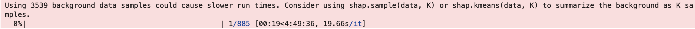
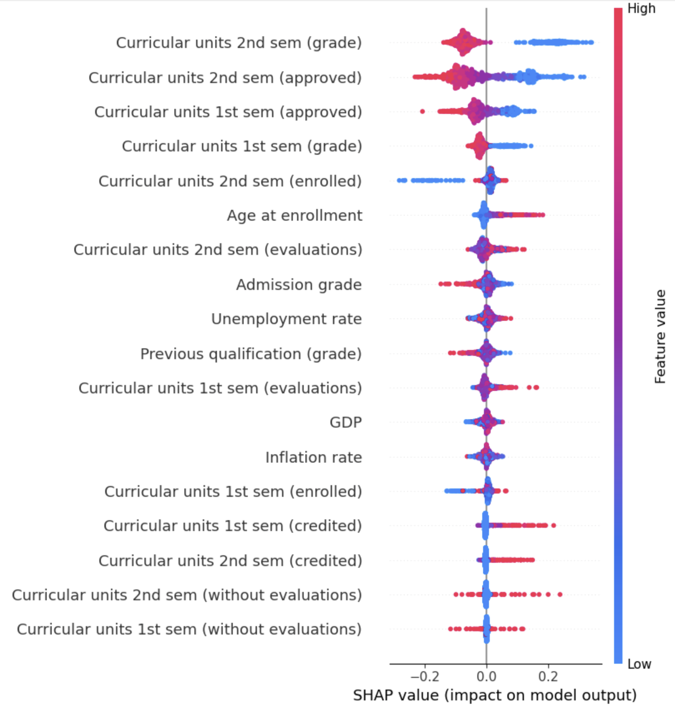
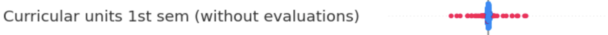

Understanding the inner workings of machine learning models is crucial in being able to explain the behaviour of the model. A k-Nearest Neighbour (kNN) model does not have coefficients like a linear model that can be used to explain feature importance. SHAP (SHapley Additive exPlanations) is a powerful tool for explaining model predictions, even for models that may seem like a “black box” such as kNN. This post will explain the steps needed to create a SHAP plots to interpret feature importance for using a kNN classifier in scikit-learn.
Computing SHAP values
The scope of this post is to focus on SHAP plot generation and plot interpretation. Therefore we start with a pre-trained pipeline with a kNN model. The example model used is from UBC MDS Student’s Academic Success Prediction project. This model predicts whether a first year university student would dropout of school using academic and social indicators. Please refer to the GitHub page for more information on the dataset and how the model was developed.
Step 1
To start, we first need perform some preparation steps. We need to first extract the prediction model knn from my_pipeline and transform our training data (X_train) and test data (X_test) with the preprocessor
# Extract the KNN classifier from the pipeline
knn = my_pipeline.named_steps['kneighborsclassifier']
# Preprocess the training and testing data
X_train_preprocessed = my_pipeline[:-1].transform(X_train) # Apply all steps except the final classifier
X_test_preprocessed = my_pipeline[:-1].transform(X_test)Step 2
Since kNN does not provide direct interpretability, we’ll use SHAP’s KernelExplainer, which works with any model that has a predict_proba method.
# Define SHAP Kernel Explainer with the predict_proba method
explainer = shap.KernelExplainer(knn.predict_proba, X_train_preprocessed)
# Calculate SHAP values for the test dataset
shap_values = explainer.shap_values(X_test_preprocessed)The shap_values object now contains SHAP values for all classes. Each element in shap_values corresponds to one class.
Step 3 (Optional)
Depending on the size of the dataset, the KernelExplainer in the may give a warning about slow runtimes.

To reduce the runtime, we can subsample our data before passing it to KernelExplainer.
# Reduce the dataset to 100 samples for KernelExplainer
subsample = shap.sample(X_train_preprocessed, 100)
explainer = shap.KernelExplainer(knn.predict_proba, subsample)
shap_values = explainer.shap_values(X_test_preprocessed)Step 4
To focus on a specific class, select its SHAP values and generate a summary plot. In the example model, Class 0 corresponds Dropout which is the class we want to analyze.
feature_names = pipeline[:-1].get_feature_names_out()
shap.summary_plot(shap_values[:,:,0], X_test_preprocessed, feature_names=feature_names)Intepreting SHAP plot

Understanding the Components of the Plot
- X-Axis (SHAP Value): Indicates how much a feature pushes the prediction towards the class
Dropout. - Y-Axis (Features): Features are sorted by their importance for the class
Dropout. - Color (Feature Value): Shows whether the feature value is high (red) or low (blue).
Plot Interpretation
- Feature Importance: Features are sorted by their average impact on predictions for the class
Dropout. - Feature Effects: Each dot represents a single sample, and its position along the X-axis shows the magnitude and direction of the feature’s effect.
- Color Gradient: Indicates feature values (e.g., blue for low and red for high).
Example 1
This feature represents the average grade of the students in the 2nd semester. We see the students with higher grades (red) clustered on the left side, indicating students with higher grades reduces the prediction for dropout. The students with lower grades (blue) are clustered on the right, indicating they are more likely to push the model to predict dropout. We see there’s no overlap between the two groups in the middle. This show theres a distinct pattern and a strong relationship between 2nd semster grade and our predictor.
Example 2
This feature represents the grade the student had at the time of admission. Similar to Curricular units 2nd sem (grade), we see a cluster of red points (higher grades) on the left and blue points (lower grades) on the right. However there’s an overlap of the two groups in the middle. The seperation between the two groups is not as strong as Curricular units 2nd sem (grade). Therefore the relative prediction power of Admission Grade is not as strong. The points in the middle are not pushing the prediction outcome to one class or another.
Example 3

This feature represents the number of non-evaluation courses (no exams) the student is taking. We no longer see a left/right clustering like in previous examples. The points in blue are students that are taking very little or none of these courses. These points are centered around 0 and not contributing much to our prediction. On the other hands, we see students who take a higher amount of these courses distributed evenly on the left and on the right. There’s no strong relationship between whether a student drops out and the number of non-evaluation courses that they take.
Takeaway
SHAP plots provide a powerful way to demystify KNN classifiers, which are often considered black-box models. By analyzing SHAP values, you can identify the most influential features for each class.
SHAP helps bridge the gap between machine learning models and human interpretability, making your models more transparent and trustworthy.